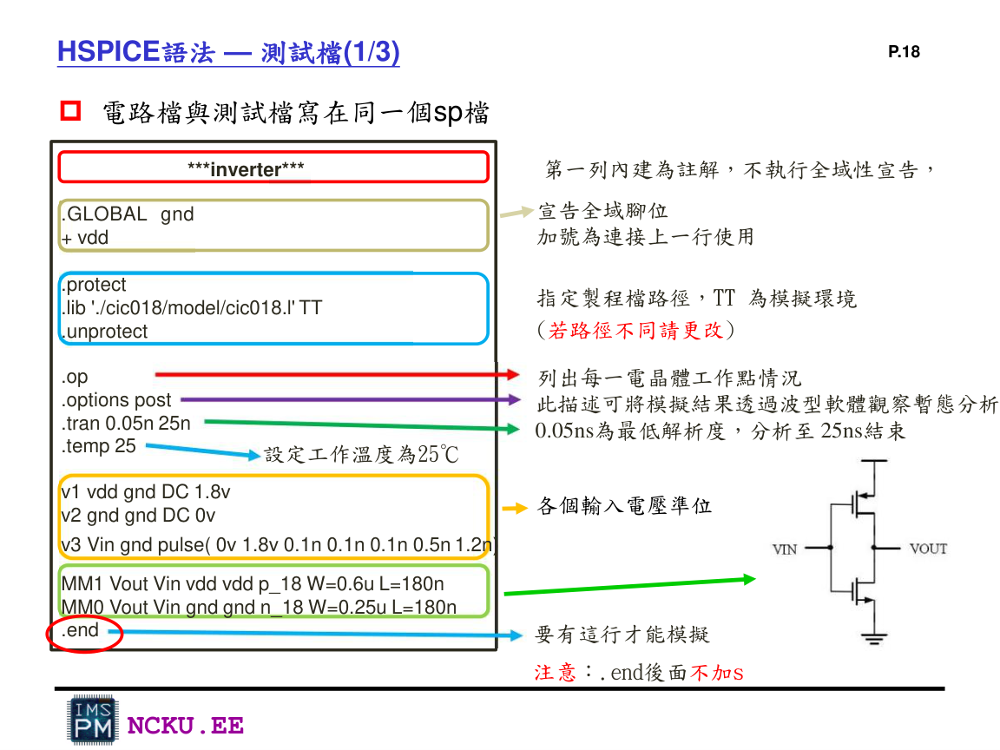
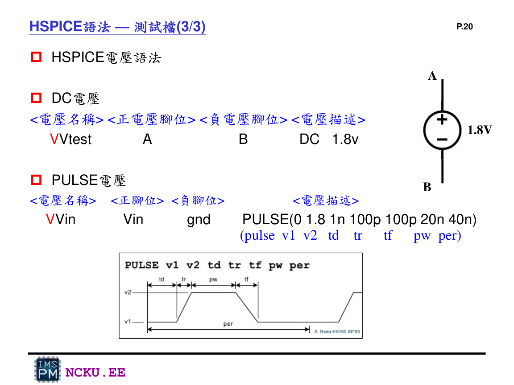
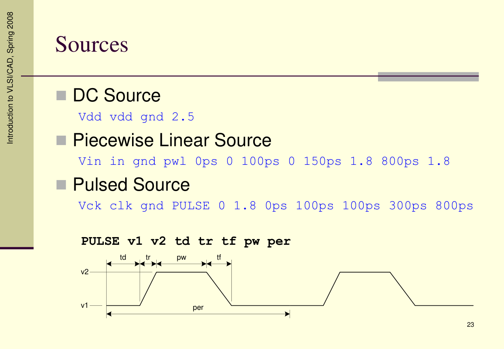
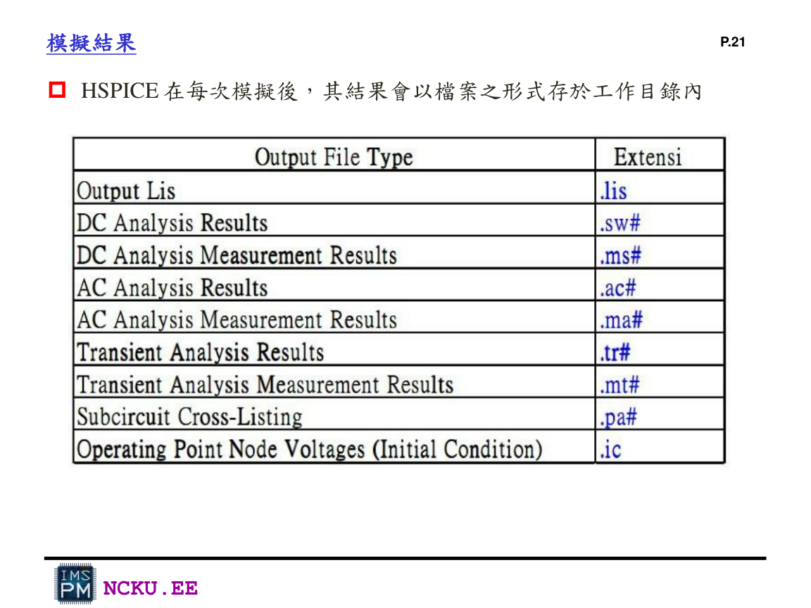

HSPICE 語法說明
Lab8 最重要的是會寫 MOSFET、subckt、include、power source、PULSE 與 .tran。
MOSFET 語法
Mname Drain Gate Source Body model W=width L=length例：Mn_inv out_1 in GND GND n_18 W=0.5u L=0.18u
子電路語法
.subckt inv in out_1 VDD GND
Mp_inv out_1 in VDD VDD p_18 W=1u L=0.18u
Mn_inv out_1 in GND GND n_18 W=0.5u L=0.18u
.ends inv注意：子電路結束是 .ends，整份 testbench 結束才是 .end。
測試檔基本架構
.INC 'circuit.spi'
.GLOBAL gnd
+ vdd
.protect
.lib 'cic018.l' TT
.unprotect
.op
.options post
.tran 0.05n 160n
.temp 25
.endPULSE 語法
VVin Vin gnd PULSE(v1 v2 td tr tf pw per)v1 是低電位、v2 是高電位、td 是 delay、tr/tf 是上升/下降時間、pw 是高電位寬度、per 是週期。
講義截圖輔助

測試檔與電路檔寫在同一個 SPICE 檔的範例。

DC source 與 PULSE source 的語法格式。

Unit 3 補充：SPICE source 可使用 DC、PWL、PULSE。

HSPICE 執行後會產生 .lis、.tr# 等結果檔。